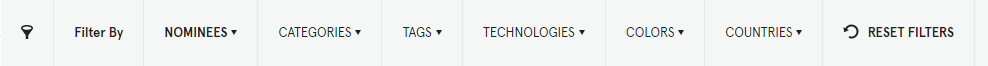

Awwwards references websites that stand out from the crowd in terms of their conception, user experience and design. It is a true reference for web designers and web developers around the world. The concept is simple : every day, designers submit their websites to Awwwards. The site is submitted in the « Site of the day » category. It is judged by members of the Awwwards community of designers, developers and agencies. The best site of each day of the year appears in the book « The 365 Best Websites Around the World ». Every month, a site is elected « Site of the month ». At the end of the year, during a ceremony, the jury chooses the best of the year.

The Awwwards site has grown since its creation in 2009. The nominees are divided into 6 groups:
- Sites of the Day
- Sites of the Month
- Sites of the Year
- Developer
- Mobile Excellence
- Honorable
There are also site themes called Categories, of which there are 26.
Pretty sites but not necessarily sober ?
Our curiosity led us to analyze 10 sites nominated on Awwwards. We have selected sites nominated in the « Mobile Excellence » group. These sites are judged on 4 criterias :
- Friendliness
- Performance
- Usability
- PWA
Awwwards assigns a score for each of the above criteria, which is then used to calculate a total score.
At Greenspector, we decided to go further in the analysis of these sites to see if they met our sobriety criteria.
Additional analysis of sites at the bottom of the ranking

More than 200 HTTP requests to load the page and then 1 request about every 10 seconds. The requests point to about 50 domains.
These queries can be found on the RequestMap (a tool created by Simon Hearne):

While the presence of the cookie banner is legitimate, the chatbot obscures a good part of the display, which is problematic for an Awwward-awarded site. Is this chatbot really necessary? Shouldn’t it open (and load) only on user request?
It should also be noted (but unfortunately this is often the case) that about thirty requests are triggered as soon as cookies are accepted.
When scrolling, the number of requests and the amount of data transferred increase considerably following the direct integration of a Vimeo video. The use of the facade pattern would have been more judicious. We also notice a carousel which is difficult to use on mobile (swipe only).
The lazy-loading is well implemented but we note various superfluous visual effects (in particular parallax) which still come to weigh down the site, in particular with scrolling.
When we scroll down to the bottom of the page, we are at more than 400 HTTP requests and more than 12 MB of data transferred.
Finally, the Wave plugin detects about 40 accessibility errors and about 30 contrast errors.
We had previously discussed the subject of sober sites, but here we are typically on a site where a very busy design and too many third-party scripts greatly degrade the user experience. This is particularly true when we look at the measurements during the pause stages:

Ideally, there should not be any data transfers or such sharp spikes in the battery discharge rate. This may be due to third party services or animations.

For this site, the loading never really ends, as the Firefox developer tools show:

The stats here (including loading time) never stop increasing.
The site is undoubtedly interesting from the point of view of pure design but it is a site that is absolutely not usable:
-The perpetual movements (without the possibility of control) will make it inaccessible for some users.
-The continuous requests to about fifteen domains will put a strain on the data plan of some users.
-Contrast errors are indeed present and keyboard navigation is more than laborious.
All this results in an environmental impact more than consequent with continuous data transfers and solicitation of the battery of the smartphones used, even in background.


The remarks on the two previous sites apply largely to this one. When loading, there are more than 200 requests for 2 MB transferred. Indeed, there are more than 57 domains, which corresponds well to the slogan of the site proposing to make your website a marketing asset.
If the size of the images is rather well controlled, most of the weight of the site comes from the JS with more than 100 requests of which a dozen are more than 100 kb each.

The lazy-loading of the images does not seem to have been implemented and the design of this homepage seems to be much too heavy anyway.
On the other hand, the errors reported by the Wave plugin are almost non-existent.
In short, there is still work to be done in order to make this homepage more sober, to better integrate certain elements but also to limit the use of third party services.
Additional analysis of top-ranked sites

This site is rather light (just over 1 MB) and fast to load. We still get 60 HTTP requests for the first load, spread over 15 domains.
This homepage is visually rich but remains clear. The images are optimized (especially through the use of webp format). It is regrettable that lazy-loading is not implemented.
The cache is globally well managed, which is a very good thing.
On the other hand, we notice that the fonts are rather large, for a total of 5 requests. It would be better to use system fonts or a variable font to limit the number of requests.
Also, from an RGPD perspective, it would be best to avoid Google fonts or host them yourself.
Some accessibility errors appear with Lighthouse.
Animations should be limited to the scroll and cursor movement effects seem superfluous (even harmful for the user).

This site is apparently quite sober. No requests to third party services and globally optimized images but too many. The implementation of lazy-loading (preferably natively) would be a very good thing.
The loading time is made longer by the default loading of a 1 MB video and about 20 requests for the fonts alone.
On the other hand, the cache is implemented on almost all elements.
Even if Wave reports few accessibility errors, animations should be less present at the scroll on the page. Currently, they make the scroll step the most impactful step from the point of view of the battery discharge speed.

The trend observed so far seems to be confirmed: many images (optimized but most of them are loaded twice) and many animations.
15 queries just for fonts but not many queries to third party services.
In short, a site that would benefit from being a little more sober in its presentation and from going further in the technical optimization to avoid that the efforts (especially image optimization) are cancelled out by bad practices (such as double loading of images).
On the Wave side, some accessibility errors come up but mostly contrast problems.
Data projection to measure environmental impact
We went further in the analysis by carrying out a data projection in order to obtain additional details, notably on the CO2 impact, the water footprint and the soil footprint.
Here, energy, data exchange, CPU and memory usage are directly measured on the device. The environmental impact and Ecoscore (based on the measurements but also on the application of good practices) are calculated. You will find the details in the dedicated article on the blog. It is thus possible to compare the different sites, classified here according to their Ecoscore (the higher the better).
| Application (Ville) | Impact par visite (g CO2e) | Impact par jour pour 10000 users (à raison de 2x/jour) (kg CO2e) | Impact total par an (kg CO2e) |
|---|---|---|---|
| TAM (Montpellier) | 1,1 | 22 | 8030 |
| Ilévia (Lille) | 1,1 | 22 | 8030 |
| CTS (Strasbourg) | 1.2 | 24 | 8760 |
| Tisseo (Toulouse) | 1.2 | 24 | 8760 |
| RTM (Marseille) | 1.2 | 24 | 8760 |
| TCL (Lyon) | 1.2 | 24 | 8760 |
| TAN (Nantes) | 1.3 | 26 | 9490 |
| Azur (Nice) | 1.5 | 30 | 10950 |
| TBM (Bordeaux) | 1.5 | 30 | 10950 |
| RATP (Paris) | 2.4 | 48 | 17520 |
Conclusion
When the design of sites must be judged or compared, those that come out on top are often sites offering a profusion of images and other visual effects such as animations or video. Even if these design choices can be more attractive or entertaining, they often harm accessibility but also environmental impacts… and therefore, ultimately, the users themselves.
Even when looking for sites specifically dedicated to sustainability, one finds examples with numerous accessibility errors or transferring files larger than 5 MB when loading.
On the Awwwards site, usability is indeed one of the criteria taken into account. However, a quick look at the scores shows that even for betterup.com, which has many accessibility errors, the usability score is often very high. It is normal that a subjective element, often linked to personal experience and the perception one has of such creations, comes into play. Nevertheless, an objective measure should allow to relativize and nuance the statement, as well for accessibility as for sobriety (even performance). These additional constraints could be a source of creativity and give rise to innovative user experiences while remaining respectful of users and the planet.